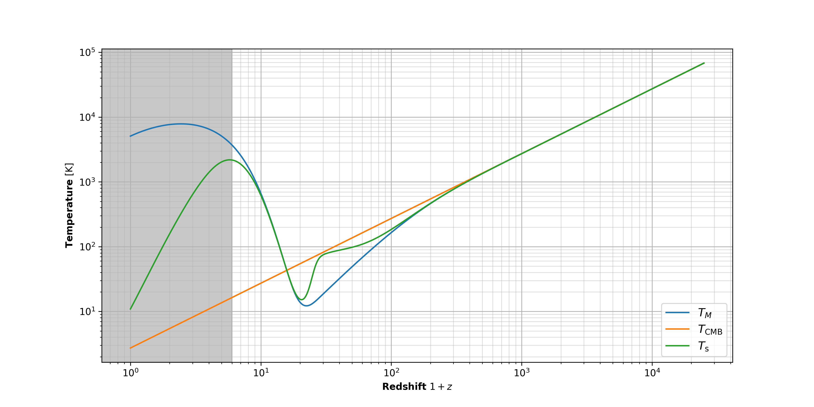

Global 21-cm cosmological signal
Hydrogen is the most abundant element in our Universe, accounting for roughly 74% of all baryonic matter, and was formed very early on, about 3 minutes after the Big Bang in a process called Big Bang Nucleosynthesis. The 21-cm spectral line is associated with the hyperfine splitting of the hydrogen atom ground state $1s$ into two states due to the the interaction of the magnetic moments of the proton and the electron. If the spin of the proton and electron are anti-parallel, their magnetic dipole moments are parallel and it corresponds to a lower energy level since parallel currents (imagine tiny loops of current) attract. This state is the singlet $1_{0}S_{1/2}$ state (note that the notation used here is $n_F L_J$). If the spin of the proton and electron are parallel, their magnetic dipole moments are anti-parallel, and it corresponds to a higher energy state, the triplet $1_{1}S_{1/2}$ state. A transition from the higher state to a lower state corresponds to an energy release of $\Delta E \approx 5.9 \times 10^{-6}~\text{eV}$ or equivalently a photon wavelength of $\lambda_{21} \approx 21.1~\text{cm}$ and frequency of $\nu_{21} \approx 1420~\text{MHz}$.
One can expect that lots of patches of hydrogen everywhere in the Universe would be constantly emitting and absorbing 21-cm photons, throughout its history. And that is correct! That is exact what 21-cm cosmology is about. By detecting ancient 21-cm signals, we can get a clear picture of the Universe's past.
How does this actually work?
"Soon" after the Big Bang, roughly 300,000 years after and corresponding to a redshift of $z=1100$, the Universe underwent a rapid change from being opaque to transparent (called the Recombination era) when all protons and electrons combined to form hydrogen atoms. Now, I mentioned that hydrogen formed 3 minutes after the Big Bang; that's true, but a more accurate description would be that protons and electrons were submerged in a bath of photons that would constantly ionize hydrogen once formed. So there was a balance of combination and ionization, leading to not many hydrogen atoms sticking around. Over time, the photons lost enough of their energy to cosmic expansion that they could no longer reionize hydrogen, and lo! Recombination occured! Hydrogen was now abundant and these photons were free to whiz through the Universe, i.e. the Universe was transparent. We still observe these early photons, in the form of cosmic micorwave background (CMB), and they provide a wealth of information about the nature of the Universe and its past.
How does this relate to 21-cm?
I was just getting to that! The CMB, as we know it, is the most perfect blackbody in nature, with a current temperature of $T_\text{CMB} \approx 3~\text{K}$. It follows Planck's law extra-ordinarily well. Which means that CMB photons are spread across all wavelengths, albeit with low probability away from the peak!
As these CMB photons hit patches of hydrogen atoms in their attempt to roam around the Universe, those in the 21-cm regime are absorbed to give an 'absorption signal'. Meanwhile, patches of hydrogen that are energetic enough may emit 21-cm wavelength and give 'emission signal'. Hence, the 21-cm signals are always measured in emision or absorption against the CMB spectrum. One can think of the CMB as a sort of "backlight" coming from the the surface of last scattering (technical term) towards us.
Now, imagine we are at the center of the Universe (in fact, this is accurate and perfectly valid due to the Cosmological Principle). We attempt to receive 21-cm signals from all directions. Patches of hydrogen across the sky give out emission/absorption signals that take time to reach us. Our cosmos is ever expanding, so these signals actually redshift as they travel (why? Well, redshift means moving towards redder wavelengths, i.e. higher wavelengths; imagine a sine wave stretching due to cosmic expansion). The deeper you look into space (on cosmological scales), the older the signal, and the more redshifted they are. Hence, the 21-cm signals are actually spread across many wavelengths, and not observed at 21-cm! Odd right? But that's the beauty of it: by observing the signals at different wavelengths, we can assign the signals at each wavelength to a particular time in the Universe's past. In our current visualization, this directly corresponds to "shells" around the Earth from which signals travelling towards us take the same amount of time to reach. Each shell is a distinct time in the Universe's history, or if you prefer, a redshift $z$ (note that redshift is defined as $z+1 = \lambda_\text{then}/\lambda_\text{now}$, so a higher redshift means older times). The 21-cm light from this shell, when it reaches us, would have the wavelength $\lambda = \lambda_{21}(1+z)$. Time, redshift and wavelength are equivalent ways to look at an instant in the Universe's past with regards to the 21-cm signal!
For those with some technical background, I'll mention here that the 21-cm signals essentially form spectral distortions to the CMB black body in the frequency range 40 — 200 MHz.
About the "global" thing...
I keep using the word "patches". Well, hydrogen is not homogenuously distributed in the Universe; it is patchy and these patches evolve, merge, do the hanky-panky and all sorts. So in a particular shell around Earth, we may have some patches absorbing 21-cm signals and others emitting 21-cm signals. When these are averaged across the sky (across a shell essentially when a particular wavelength is picked), we get what is called the global 21-cm signal. If we have a net-emission, that means most hydrogen atoms are more energetic than their surrounding CMB photons, and the opposite in case of net-absorption.
Give us some math!
Okay, okay... well, let's do some math. Astronomers love defining temperatures wherever possible, so lets define something called the spin temperature $T_\text{s}$ which gives an idea of the state of hydrogen atoms in the Universe.
\[\dfrac{n_1}{n_0} \equiv 3 e^{-T_\star/T_\text{s}}\]
Here, $n_1$ is the occupancy of the upper hyperfine state and $n_0$ is the occupancy of the lower hyperfine state (i.e., the number density of hydrogens in that state). $T_\star = h\nu_{21}/k_\text{B}=0.068~\text{K}$ is a constant, and the $3$ up-front is a statistical degeneracy factor. The evolution of the spin temperature through cosmic time is determined by three factors that can cause a spin-flip (i.e, a change from $n_0$ to $n_1$ or vice-versa):
- Radiative coupling — As CMB photons collide with hydrogen atoms, they bring the the spin temperature $T_\text{s}$ closer to the CMB temperature at that redshift $T_\text{CMB}$. And as discussed previously, we detect the absorption of 21cm photons from the CMB radiation field or emission of 21cm photons on top of the CMB radiation field. If $T_\text{s} = T_\text{CMB}$, i.e. CMB photons and hydrogen atoms are in equilibrium, we would have no 21-cm signal!
- Collisional coupling — The electrons, protons and other hydrogen atoms are part of the commotion in our Universe. So collisions between these species and hydrogen atoms drives $T_\text{s}$ towards a quantity called the matter temperature $T_M$ (simply a measure of how energetic the particles are!). This pulls away
- Wouthuysen-Field coupling — This one is tricker to explain. A Lyman-$\alpha$ photon corresponds to the energy transition between $n = 1$ and $n = 2$ states of an hydrogen atom. Some time 100 million years after the Big Bang, corresponding to a redshift of $z \sim 30$, the first stars and galaxies are formed. These stars pump a lot of ultra-violet (UV) radiation into the interstellar/intergalacitic medium. Ly$\alpha$ line falls within this UV spectrum. So, how does these photons affect the spin temperature? Well, the energy of transition is not exactly the same for each photon; it is roughly the $n = 1$ and $n = 2$ transition, but these states are split into hyperfine energy states. The diagram below shows the Wouthuysen-Field (WF) mechanism. Note the electric dipole selection rule $\Delta F = 0,1$ with no $F = 0 \rightarrow 0$. Solid line transitions show spin flips, while the dashed lines transitions are allowed but do not contribute to spin flip. As an example, consider a hydrogen atom in the hyperfine singlet ground state $1_0S_{1/2}$. When it absorbs a Ly$\alpha$ photon, it can excite to the $2_1 P_{1/2}$ and then re-emit a Ly$\alpha$ photon to drop back down to the $1_1 S_{1/2}$ state. Similarly, photoexcitation out of the triplet state and relaxation to the singlet state can occur too. The overall result is a spin flip. Hence, in this manner, resonant scattering of Ly$\alpha$ photons can change the relative occupation of the two hyperfine ground state of a hydrogen atom. The coupling drives the spin temperature $T_\text{s}$ to the 'colour temperature' of the Ly$\alpha$ radiation field $T_\alpha$. For most purposes, one can assume $T_\alpha \sim T_M$. Hence, the WF coupling provides an alternate mechanism for $T_\text{s}$ to couple to $T_M$.
Bringing things together
Okay, that was quite a bit! Let's collect these things into a single definition equation:
\[T_\text{s} ^{-1}= \dfrac{x_\text{CMB} T_\text{CMB}^{-1} + x_c T_\text{M}^{-1} + x_\alpha T_\alpha^{-1}}{x_\text{CMB}+ x_c +x_\alpha}\]
We already introduced $T_\text{CMB}$, $T_M$ and $T_C$ — our main ingredients. The expression somewhat resembles a harmonic mean, with the coupling coefficients $x_\text{CMB}$, $x_c$ and $x_\alpha$ acting as the weights. These coefficients are not constant but change as a function of redshift $z$. For example, the collisional coupling coefficient $x_c$ intuitively depends on the density of electrons, proton and hydrogen atoms in the Universe. So, higher density $\rightarrow$ more collisions $\rightarrow$ stronger coupling to the matter temperature $T_M$! And the densities are changing over time (equivalently, over redshift) due to cosmic expansion. I alluded several times to the fact that what we "observe" is not the spin temperature itself, but its contrast with the CMB temperature. We define this quantity as the differential brightness temperature $\Delta T_\text{b}$ which is defined by:
\[\Delta T_\text{b} = \dfrac{\left(1-e^{-\tau_{21}}\right)}{1+z}\left(T_\text{s}-T_\text{CMB} \right).\]
Now, the exact expression is not important, but the main bit of interest is that $\Delta T_\text{b} \propto (T_\text{s}-T_\text{CMB})$. Recall how I said there would be no signal if $T_\text{s} = T_\text{CMB}$; this is why! Furthermore, $T_\text{s} > T_\text{CMB}$ corresponds to a net-emision signal and the other way around for net-absorption.
Global signal evolution
A large amount of theoretical work has already gone into modelling the 21-cm spin temperature and differential brightness temperature; I refer interested readers to the wonderful reviews by Furlanetto, Oh & Briggs (2006); Prichard & Loeb (2012); and Barkana (2016). These texts explain everything I have said so far with all the nitty-gritty technical details of the modelling (specifically, how the coupling coefficients and temperatures can be derived and simulated), and provide a lot more insight into the field of 21-cm cosmology itself.
Here's where my work comes in. Through the summer of 2021, under the supervision of Prof. Jens Chluba at the University of Manchester, I recreated the 'standard' evolution of the $T_\text{s}$ and $\Delta T_\text{b}$ within this cosmological codes $\texttt{Recfast++}$ and $\texttt{CosmoTherm}$.
So what does this evolution actually look like? Let's look at the plots I produced in my work:

The first plot shows the evolution of $T_\text{s}$ along with $T_\text{CMB}$ and $T_\text{M}$, while the second plot shows the evolution of $\Delta T_\text{b}$. Note that the $x$-axis on both plots are logarithmic and describe the time scale as redshift $1+z$ meaning that the plot is read from right to left (increasing in age of the Universe towards present times with $z=0$ being today). Right off the bat, in the first plot, we see that the CMB temperature ($T_\text{CMB}$) follows a linear $1+z$ trend. All CMB photons are being redshifted due to cosmic expansion, following the same temperature trend as their wavelengths. Furthermore, things are roughly becoming cooler (called Hubble cooling). Well, an expanding Universe means it is getting less dense, and particles are no longer tussling with each other for space (hehe). So they becomes less energetic and attain a lower temperature. But well, there's lots more going in the plot. So let's break this it down into sections:
- $z>1000$ — At very early times (i.e. high redshifts), when the Universe is younger than $\approx$ 0.4 million years in age, $T_\text{CMB}$ and $T_M$ are strongly coupled. The CMB photons and different matter particles (protons, electrons, hydrogen atoms) are all tussling together in a highly dense Universe, basically distributing the energy equally between everything that existed. No 21-cm signal is seen in this era purely because all hydrogen wasn't abundant at all and constantly being ionized (recall that Recombination only occured at $z=1100$).
- $100 < z < 1000$ — This is approximately the time span between $\approx$ 0.4 million years to $\approx$ 16 million years, and is called the Dark Ages (you'll see why!). We see that $T_M$ starts to depart from $T_\text{CMB}$ in this time span. Although the CMB and matter decoupled at Recombination, the process of Thomson scattering is efficient enough to keep their temperatures relatively close until much after, upto order of $z=100$ redshits. But eventually, as we can see, the Hubble cooling wins. Despite the Universe expanding, the density of electrons, protons and hydrogen is enough for the spin temperature $T_\text{s}$ to be collisionally coupled to $T_M$. Starting to see some signal absorption signal $\Delta T_\text{b}$ here.
- $100 < z < 30$ — $T_M$ keeps cooling, $T_\text{CMB}$ does it's own $z+1$ thing. All's well. But what's with $T_\text{s}$? Turns out during this era, the density of matter is too small to keep collisional coupling efficient and so, radiative coupling takes over and brings $T_\text{s}$ close to $T_\text{CMB}$. And subsequently, the absorption signal $\Delta T_\text{b}$ is becoming less intense.
- $6 < z < 30 $ — BAM! What was that? Oh wow, we now have the first stars and galaxies forming. Intense! A redshift of $z=30$ is roughly 100 million years after the Big Bang. This era is called the Cosmic Dawn; the Universe just went from no stars during the Dark Ages to looooots of star formation and energetic photons, opening up the possibility for funky astrophysical activities to take place. These stars pump UV into the Universe which starts to heat up everything, slowing down $T_M$ from cooling and shooting it up towards higher temperatures from $z \sim 20$. Remember Wouthuysen-Field coupling? The Lyman-$\alpha$ photons from the stars kick start the WF mechanism through which we can again couple $T_\text{s}$ to $T_M$. This is why $T_\text{s}$ is jolted back towards $T_M$ at $z \sim 30$ and is strongly coupled to it by $z=20$. Hence, we see a massive absorption signal $\Delta T_\text{b}$ here, peaking around $z \sim 20$! In fact, not long after, $T_M$ (and with it, $T_\text{s}$) become higher than $T_\text{CMB}$, thereby decreasing the absorption signal to eventually become an emission signal!
- $z<6$ — At very recent times, you'll notice the plots are greyed out. This means that the abundance of stars and galaxies have introduced such a huge complexity into the Universe that basic models cannot capture things well. But does it matter? Well, not really! During the Cosmic Dawn and subsequent times, the stars have emitted so much UV light that all the hydrogen is ionized (an event called Reionization). If there are no hydrogen atoms, that means no 21-cm signal anymore. Hence, $\Delta T_\text{b}$ tends towards zero at such late times in the Universe (or equivalently, as we move closer to today).
Is this consistent with literature?
Like I said, my task was to recreate the standard evolution of the 21-cm signal. Here's a plot from Prichard & Loeb (2008):
It's largely consistent! Phew, such a relief. Furthermore, here's an excellent illustration from Prichard & Loeb (2012) which links time since Big Bang, redshifts $z$, and the redshifted frequency of the signal $\nu$ (important for observations!) all with a nice figure of the patchiness of hydrogen (blue being absorption signal and red being emission signal) which was not relevant to my work (remember, 'global' signal is what I care about!):
Why do we care?
The 21-cm signal is one of the best probes for the Dark Ages and the Cosmic Dawn. By looking at the exact shape of $\Delta T_\text{b}$, we can extract information about the first stars and galaxies by putting constraints on a range of Reionization parameters. However, a detection of this global 21-cm signal has evaded us for a long time. The signal is heavily obscured by strong foreground galactic emissions, which need to be accurately modelled in order to be subtracted from the data. Furthermore, a detection requires a well calibrated antenna with the ability to make sensitive measurements! A number of such experiments chasing this signal are underway, and it will be exciting to see how upcoming detections can be used in conjunction with high-$z$ galaxy data from the JWST to make even better constraints on the history of our Universe!
Links to my work:
- You can check out my global 21-cm signal modelling as an added module to $\texttt{Recfast++}$ here: 21cm in Recfast++.
- A similar implementation in $\texttt{CosmoTherm}$ is not currently public. Stay tuned for upcoming publications!
- As an addition to this project, I also made a Python wrapper $\texttt{Recfast++}$ which can be found here: Recfast++ Python wrapper.